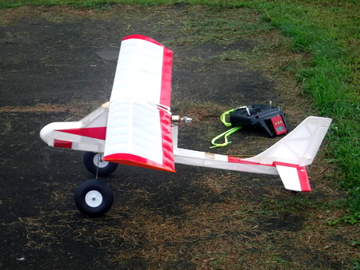
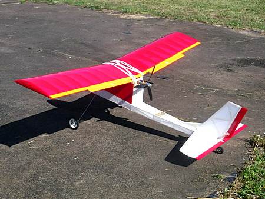
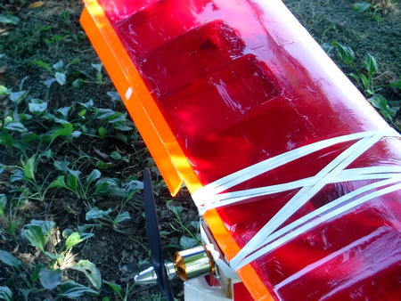

飛行日誌
NAVION（プッシャー型機） 自作

| 全長 | 930 mm |
| 全幅 | 1195 mm |
| 翼弦長 | 200 mm |
| 全備重量 | 820g |
| 主翼面積 | 23.9 dm2 |
| 翼面荷重 | 34.3g/dm2 |
| 主翼翼型 | Clark-Y 類似 （実家に保管してあった、 ムサシノ製プレイリーの主翼を流用） |
| モ－タ－ | 1250KV |
| プロペラ | 8×6×3、もしくは8×6E |
| バッテリ－ | KEYPON 3S, 2200mAh, 161g, コネクタ含む |
| サ－ボ | MG90S (13g)×4、エレベーター・ラダー、 後にフラップを後付けして2個使用 |
| 受信機 | Futaba R3106GF (7.8g) |
| アンプ | 40A |
設計・製作のきっかけ
2022年が明けた頃から、持病が再発し、リハビリを兼ねてラジコン飛行機をまた作りたいな.....と思い、インターネットをフラフラと眺めていたら、OUTER ZONE というイギリスのウェブサイトや、AeroFred のサイトに、色々な機体の図面がアップされていることを知った。主としてビンテージモデルが主体であるが、実に興味と製作意欲をそそられる機体ばかりである。
もう20年も前に、クラブの諸先輩方の親切な指導で、ようやく飛ばせるようになった頃は、ムサシノ模型飛行機のエンジン機「プレイりー」、同スカイカンガルーの電動化機体、QRP製のMOGRAというモーターグライダー、そして自作機のNORA-400 などを飛ばしていた。
今度はちょっと何か、変わった機体が作りたいなァ.....初心者には、機首部分が壊れても動力やペラに影響の少ないプッシャー型機が適していると聞きかじっていたので、この NAVION という機体に巡り逢った。（今になって思えば、この選定は、ある意味正しく、ある意味間違っていたかもしれない。まぁ自分の製作・飛行技量の稚拙さによるのであるが。）
この時点では、まだ CAD のフリーソフトを探しあぐねていたので、同じくフリーの描画ソフト、Inkspace で作図してみた。
フライト・インプレッション
滑走試験・初フライト
2022年4月、曇りがちのうすら寒い日、ホンダのリトルカブの荷台にコンテナボックスをくくり付け、そこに胴体と必要な用具を入れる。主翼は百均で買った、キャンプに使う銀色の保温マットでくるみ、デイパックにベルトで固定した。いそいそと、スピードを出さないよう、クラブの飛行場に向かう。
河川敷について、ウィンドソックスを立てる。椅子を出して座り込み、主翼をゴム紐で胴体に固定し、バッテリーをマジックテープで胴体内に固定する。重心位置は、前縁から翼弦長の25% ほどにあった。まずまず。さて、タキシングからモーターの回転数を徐々に上げ、離陸を試みる。
が、しかし、まったく浮く気配が無い。20回近くやってみるが、全然ダメである。40m ほどの滑走路から外れてアサッテの方向へ逸れてしまうので、その度に取りに行って、またスタート地点に戻し.....なんてことを小一時間やったら、日頃の運動不足がたたってヘトヘトになってしまった。
そのうちに、ベテランのAさんが来て、調子を見てくれた。尾輪の脚が高すぎて、滑走時の迎え角が足らないのでは？ それと、尾輪の固定がしっかりしていないので、滑走時にヨッパライ運転になってしまうのでしょう、とアドバイスしてくれた。
そこで、強引に尾輪の脚を曲げ、付け根を瞬間接着剤で補強した。その上でAさんに初飛行をお願いすると、NAVION は見事に離陸し、安定した水平飛行を見せて、きれいに着陸した。
その後、何回か飛ばしてみて、改めてオリジナル図面を見ていたら、重大な設計ミスに気が付いた。主翼取り付け部の前側が、設計図よりも 5mm ほど低く作ってしまい、迎え角が不足していたのだ。そこで、くさび状のゲタを取り付けて、何とか設計図どおりの主翼取り付けができるようになった。
また、モーターのアップスラスト、サイドスラストも、飛行状態をTさんに聞いて、微調整を行った。さらに、着陸アプローチ時の低速飛行ができるように、プレイリーの主翼にフラップを後付けしたりして、現在は快調に飛んでいる。


何度も墜落したが、初心者向けのゴム紐固定主翼と、頑丈に作った機首ブロック、そしてプッシャー形式のおかげで、大破には至らず、すこしの補修で復活してくれた。
僕はまだ、離陸、水平飛行、８の字旋回、長方形旋回、単純な宙返り、そして何とか着陸ができるレベルであるが、クラブの名人、Aさんが飛ばしてみてくれた時には、見事なストールターンを披露してくれて、「この機体であんなアクロバティックな機動ができるんだ！」と感心させられた。ただ、Aさんの観察によると、重心位置を少し前に出した方が、着陸時に伸びすぎることがなくなって楽に着陸できるだろうとアドバイスを頂いた。今度、バラストをバッテリーと一緒に載せて、試してみる予定。
現在は、エルロン付きの主翼も作り、これまでラダー機しか飛ばしたことが無かったのだが、エルロン仕様のキビキビした飛び具合にも満足している。末永く、この機体を楽しみたい。
Wingtips 目次へ
ホームへ